The Login App is the first "proper" purely personal project I have taken on. The main objective of this
project was to improve my ability of writing Object-Oriented code. Starting off, I had a basic idea of what I wanted to build -
knowing that along the way I would find more and more features to add and improve on. I chose to use Python, due to it being my
strongest and most used programming language thus far.
I wrote all of the code (which can be found here) using the
AGILE development method - a snippet of my sprint logs is shown below.
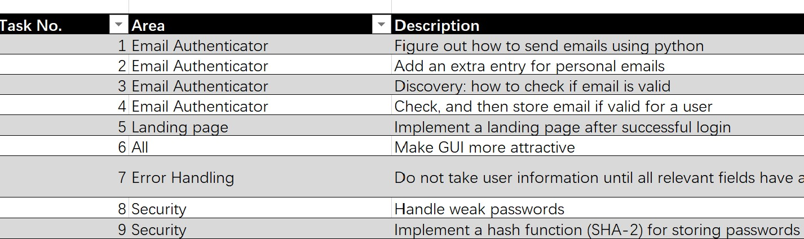
The GUI I used for my App was created using a framework built in to the standard library provided
by Python - Tkinter. Using Tkinter sometimes gives the UI a very outdated/clunky look, however, it is easy for new users to pick
up in a short time. The main page, a Tk() object, is the login page (shown below), where existing users can login in. The other pages used by
the app open as Toplevel() objects that "stem" from the login page.
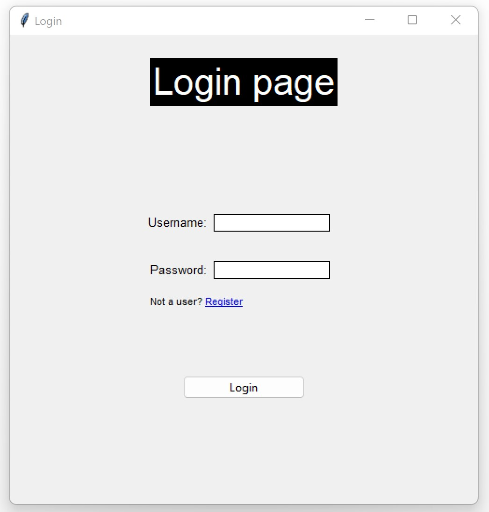
If you are not an existing user, there is an option to register an account with the app. After choosing this option, the user will be asked
to provide several details: a new username, password and email address.
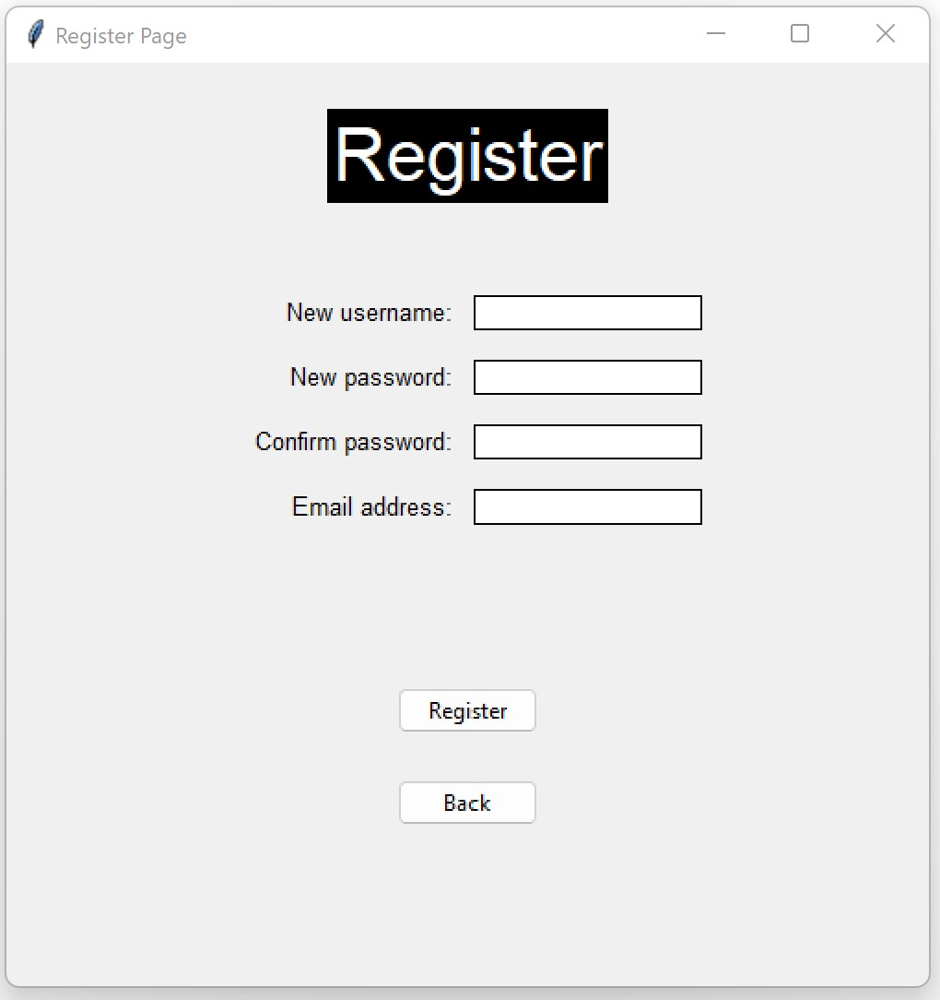
Upon successful registration, an email will be sent to your email address, and a success message will be displayed to the user.
The user can now proceed to log in to the app.
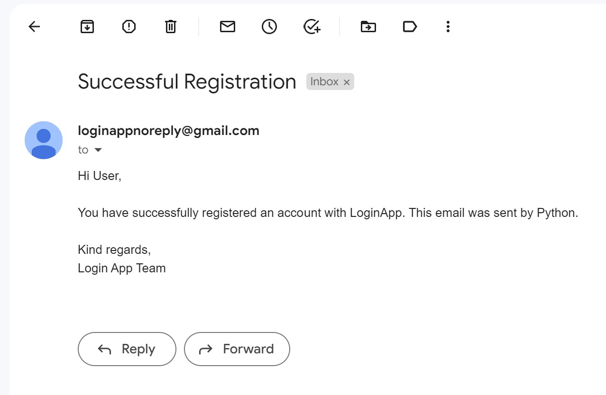
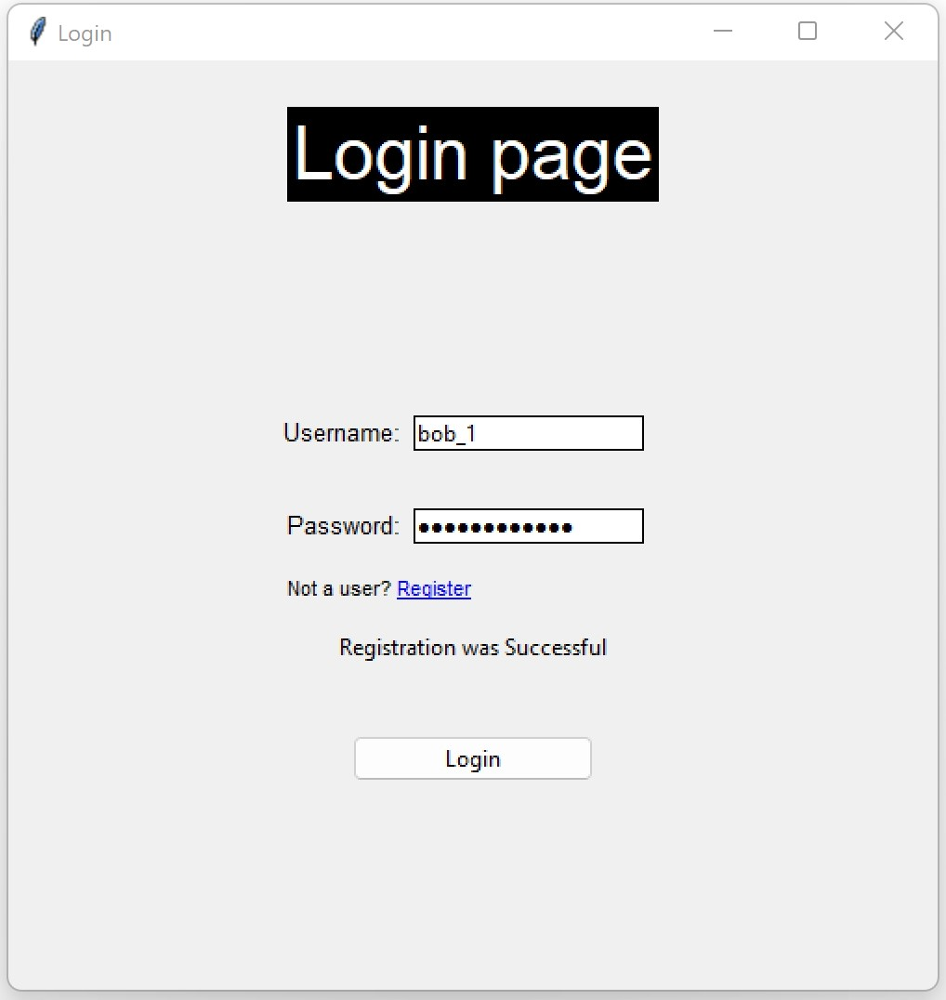
If the username and password both match an account on the system, the app will then prompt the user for a 6 digit code, sent to the
email address they signed up with. (2FA process described in next section)
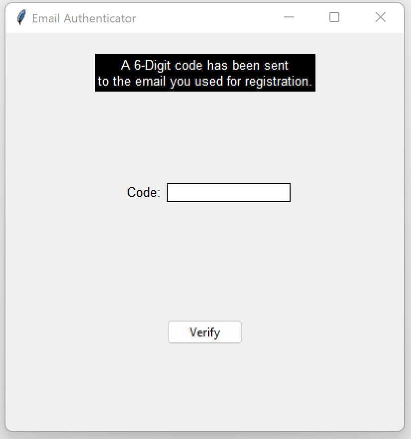
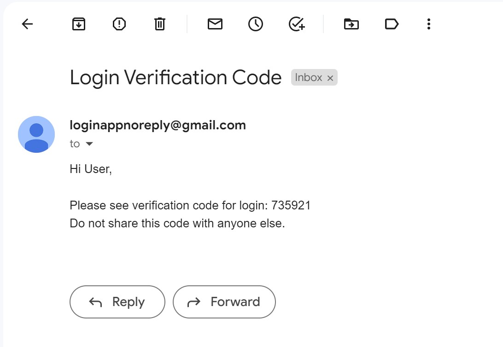
If the user enters the code correctly, they will reach the landing page of the login app. Here, their username and email address will
displayed. The background is a reference to the TV show Mr. Robot.
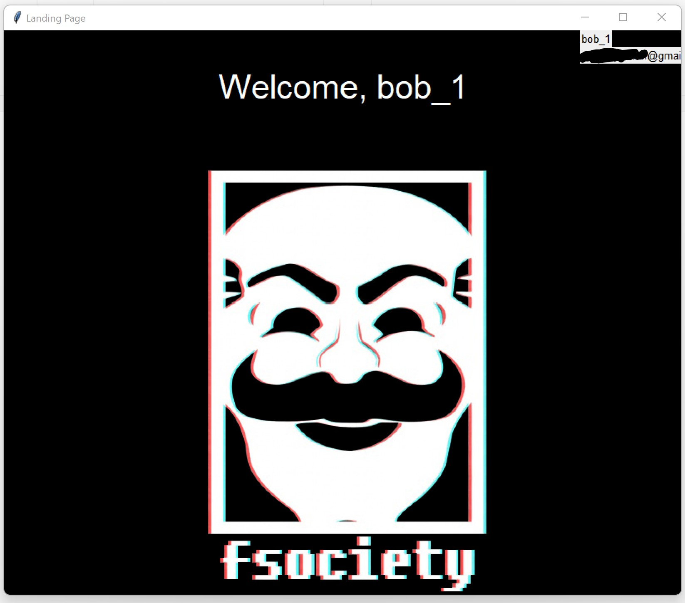
This section will talk about the 2 Factor Authentication (2FA) used within the app and the basic security
measures used to make the app more secure, and to protect users. The entire process is very simple, and starts off by concatenating 6 random
integers into a code and sending this to the user's email address, whilst simultaneously prompting the user to enter the aforementioned code.
Then, these can simply be compared - resulting in successful login if they are same, and rejecting sign in if otherwise. In order to add
2FA to the app, discovery work was done into sending emails using the built in Python library, smtplib. In particular, I used the class
smtplib.SMTP_SSL(); the code for the mail sending function is shown below.
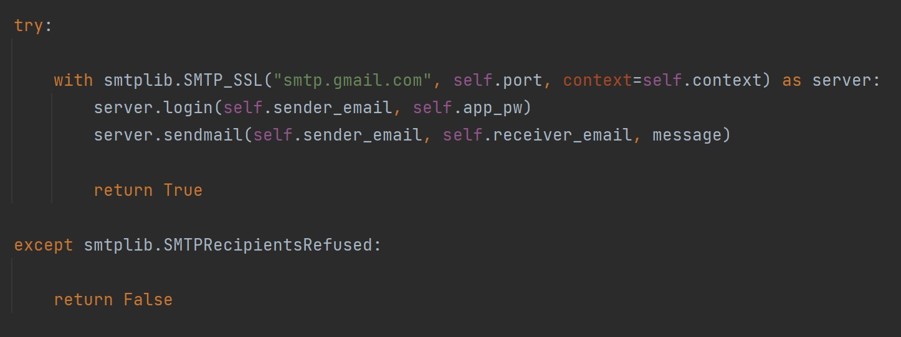
I will now briefly describe the process carried out by this code.
A link is established to a Simple Mail Transfer Protocol (SMTP) server, here the
specific one used is owned by Google, the address being: "smtp.gmail.com". After using method .login(), and providing correct details to a valid
gmail account, an email can be sent. The email and other details, such as recipient's address is sent over to the host address corresponding to the
SMTP server. The SMTP server will then contact the DNS server in order to find the recipient's IP address.The SMTP server finally sends the information
to email recipient's Mail Transfer Agent (MTA) server. Then, using either POP or IMAP protocols (depending on recipients email client) the email
will arrive at the recipient's inbox. The whole process is done using Secure Sockets Layer (SSL) protocol, which creates an encrypted
connection, making sure that in the unlikely case the email is intercepted midway, hackers cannot access the information within the email.
Aside from 2FA, the app requires users to create a password that adheres to standard requirements:
- Password must be at least 8 characters in length.
- Password must contain a Capital letter.
- Password must contain a special character.
- Password must contain a number.
If the user fails to meet these requirements, the app will reject the password and prompt the user to strengthen the password.
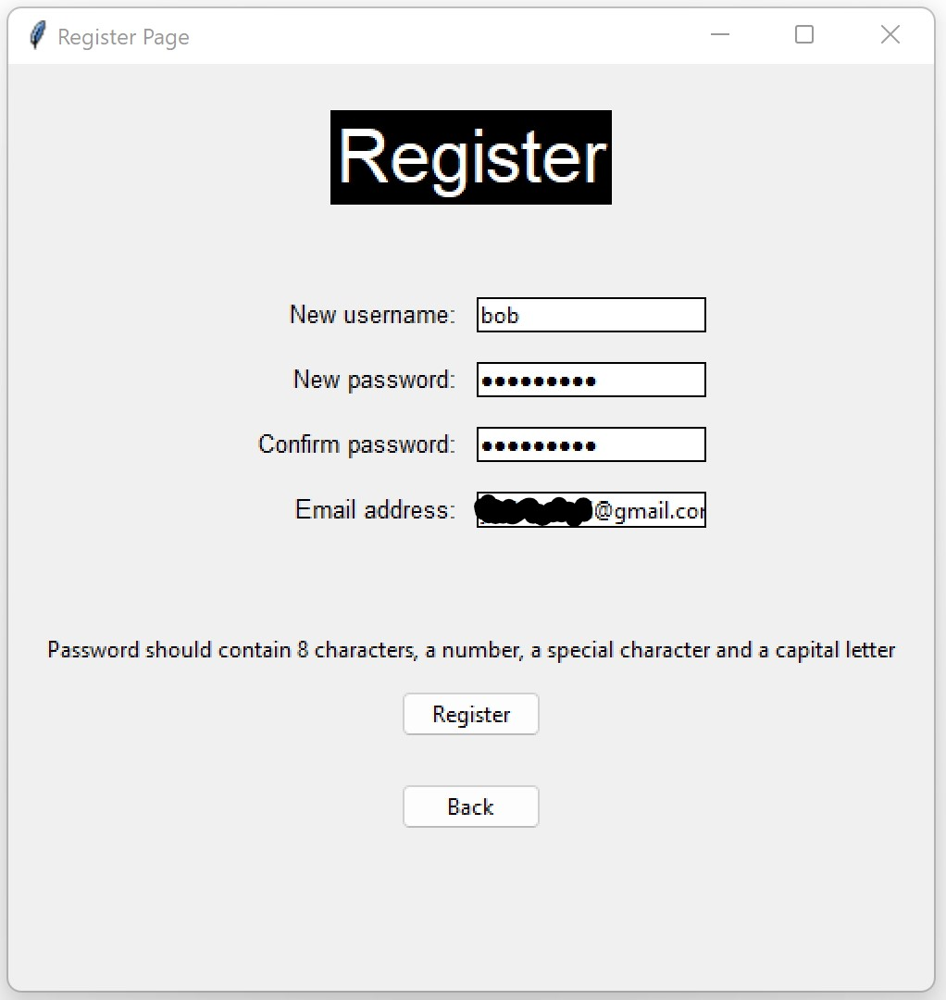
Additionally, passwords that are stored on the database are hashed using SHA-256. This adds extra steps for a hacker that gets access
to the database. If they try to brute force the password, they will need to apply the hash every attempt in order to find the correct
password, which is more time consuming. The algorithm is described in more detail in the next section.
This section will briefly go over the Secure Hashing Algorithm(SHA) - 256, implemented from scratch to be
used to hash passwords in the Login app. Information in this section can be found in its entirety
here, in the pseudocode section.
Below, you can see the main method implemented in my class, SHA2, called .encrypt().
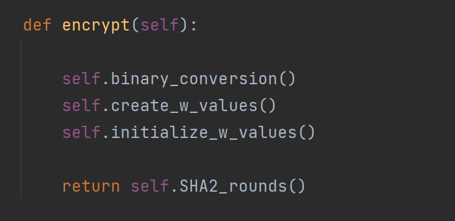
Walking through the steps within this method, first there is a method called binary conversion. This simply takes the password string,
and converts each character to binary. Next, the binary string is "padded" with zeros and the message length (also in binary) so that
we end up with a 512-bit binary string.
The next two steps are very related, so they shall be described together. In SHA-256 hashing, there are 64 so called W values, which
are used in "rounds". The first 16 W values, labelled 0 to 15, are created using your initial message, splitting up the 512-bits into
16 x 32-bit chunks. Then, after these have been obtained, the algorithm will proceed to iterate 64 minus 16 times to "generate" the rest
of the W values. This is using the formula below:
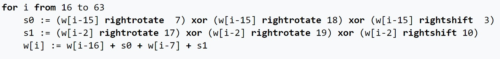
Which uses functions for right rotate (switching order of bits) and right shift (removing bits and padding with zeros), as well as existing
W values to find new W values. After this is completed, 64 "rounds" will commence.
The diagram of a single round is shown below.

A to H at the top represent "working variables". Using a number of different functions: maj, conditional, Sigma, combined with our W values
and K values (created using cube roots of first 64 prime numbers) using modular addition, these working variables are then used to initialize
the working variables of the next round. This is repeated 64 times to retrieve the final set of working variables. Adding these to the initial
working variables and converting to hexadecimal, and finally concatentating, we retrieve the SHA256 hash.
Unittests were written to test the validity of hash function.
SQLite3, built - in to the standard python library was used to connect/create/maintain the database for the Login app. Queries to the database were written in SQL.